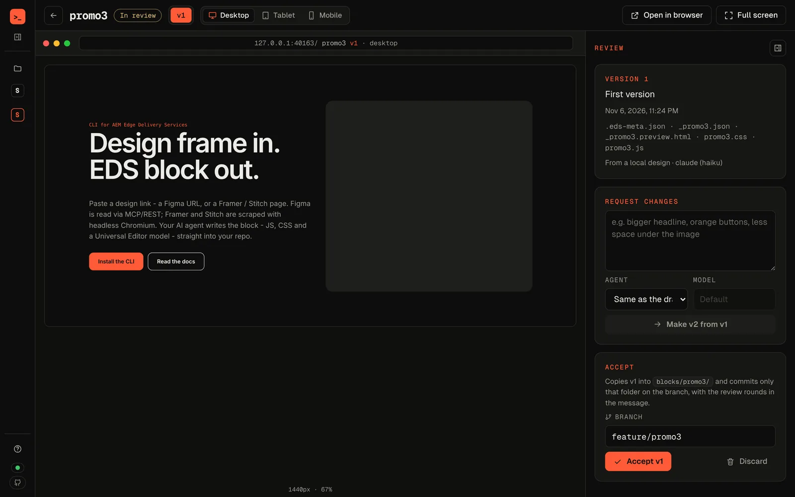

Paste a design link - a Figma URL, or a Framer / Stitch page. Figma is read via MCP/REST; Framer and Stitch are scraped with headless Chromium. Your AI agent writes the block - JS, CSS and a Universal Editor model - straight into your repo, inside guardrails.
eds resolves the design once into a cached snapshot - from a local export, the Figma REST API (optional token), or a single Figma MCP call - then hands it to the agent you already use, which writes files back into your repo. Retries and refines never re-fetch.
--screenshot).Run it from anywhere inside an EDS project - eds finds the root (fstab.yaml, head.html or scripts/). Run eds alone for a menu that stays open (arrows, Enter, Esc); every command also takes flags for CI.
--design diffs the render against the Figma image.--json streams events for tools.Three checks, one habit. Run them locally or wire them into CI - security exits non-zero on critical and high findings.
eds, in a window.AEM EDS Studio is the desktop app built on aem-eds-kit, for developers, managers and clients. Paste a design link, review the block on desktop, tablet and mobile, ask for changes in plain words, accept it onto a branch. A work board shows the team's issues and pull requests.
eds for every step; no Node to install.
No project yet? eds new my-site clones the latest boilerplate. No Figma file? --sample uses a bundled design, and --dry-run shows the prompt without running an agent.
Copy the setup prompt and paste it into Claude, Cursor, or any coding agent. It checks Node, installs the CLI with npm, pnpm or yarn, and verifies it.
Goal: Ensure Node.js v20 or newer is installed, then install the aem-eds-kit CLI and verify it. Check first: Run `node --version`. If Node.js is already installed and the major version is 20 or higher: Do not install or modify Node.js. Continue to the aem-eds-kit install. If Node.js is missing or older than v20: Install an official Node.js release with major version 20 or higher. Install policy: Use an existing package manager only if it is already installed. Do not install Homebrew, winget, Chocolatey, Scoop, nvm, fnm, or another package manager just for this task. Install options: macOS: - If Homebrew is already installed, use it to install Node.js. - Otherwise use the official Node.js `.pkg` installer. Windows: - If winget is already installed, use it to install Node.js. - Otherwise use the official Node.js `.msi` installer. Linux: - If the system package manager can install Node.js v20 or newer, use it. - For Debian/Ubuntu or RHEL/Fedora-compatible systems, use the official NodeSource instructions for Node.js 20 or newer. - Otherwise use the official Node.js standalone Linux binary for the detected architecture. Official downloads: Use the static latest Node.js release directory: https://nodejs.org/download/release/latest/ Verify Node: After installing, run `node --version` again. Only continue if the major version is 20 or higher. Install the CLI: Use the package manager the user already works with. Check `pnpm --version` and `yarn --version`; if neither is installed, use npm (it ships with Node.js). Do not install pnpm or yarn just for this task. - npm: `npm install -g aem-eds-kit` - pnpm: `pnpm add -g aem-eds-kit` (if it reports a missing global bin directory, run `pnpm setup`, restart the shell, and retry) - yarn 1.x: `yarn global add aem-eds-kit` - yarn 2 or newer has no global installs - use npm instead. Verify: Run `eds --version`. Only continue if it prints a version. Final step: From inside an EDS project (a folder with fstab.yaml, head.html, or scripts/scripts.js), run `eds` for the interactive menu, or `eds init` to set up a freshly cloned Adobe EDS boilerplate. Success message: If everything completes, tell the user they are set up and what to do next: - Just cloned the Adobe EDS boilerplate? Run `eds init` and pick the authoring model (Universal Editor, DA, Google Drive, or SharePoint). - Want a block from a design? Run `eds block from-design` and paste a Figma URL, or a Framer/Stitch page.
styles.css.decorate(), CSS taken from the rendered page, whole pages migrated.No. It's a dev tool only - zero bytes in your bundle, zero LCP impact.
No - by default your AI agent reads the design through its Figma MCP connection (one call per block, then cached). Optionally set a Figma Personal Access Token (FIGMA_TOKEN) to use the REST API instead, on its own budget: 10-20 calls a minute with a Dev or Full seat on a paid plan, 20 a month on Starter or with a View / Collab seat. eds paces REST calls and stops with the reset time on a plan cap. Framer / Stitch pages and local PNG/SVG exports need no token at all.
Claude Code, Cursor and Codex - or a local model through Ollama, oMLX or any OpenAI-compatible server (--agent ollama|omlx|local, --model), so designs never leave your machine. Pick one per run with --agent or in config, or use --agent none to just save the prompt.
No - it complements it. aem-cli runs the dev server; eds handles new projects, scaffolding, design-to-block, migration, audits and publishing around it.
Yes. Every command runs non-interactively with flags; doctor, the audits and block list support --json; the audits, block test and block check exit non-zero on failures.